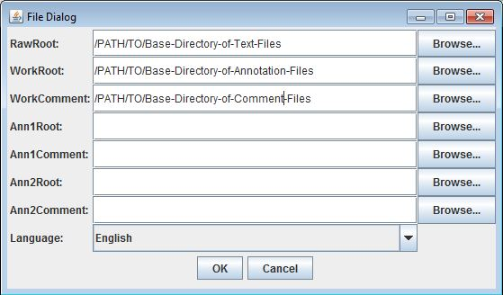

|
University of Pennsylvania |
Institute For Research in Cognitive Science |
 |
PDTB 3.0 TOOLS AND DOCUMENTATIONTHE PDTB AnnotatorThe PDTB Annotator is a tool for annotating and adjudicating discourse relations using the PDTB Annotation Framework. It enables the annotation of text files with minimal preprocessing - the user simply needs to organize their text files into the correct directory structures before loading them into the Annotator. Prerequisites and DownloadThe latest version of the PDTB Annotator is Annotator version 4. The Annotator runs locally on the user's computer. To run the tool, users should have at least version 8 of the Java Runtime Environment installed on their computer. Check if you have Java installed here. Once Java is running on your computer, download the Annotator using the following link: A config file named Options.cfg is also necessary to run the tool: SetupStep 1 - Gather your text files and convert to UTF-8Gather the text files that you wish to annotate. Ensure that these files are saved in UTF-8 (Unicode). There are several ways to convert a file to UTF-8. The following sites offer several suggestions: Saving a text file on a Mac or PC in UTF-8Converting files to UTF-8 Step 2 - Organize your text files into a directory structureCreate a directory that will contain your text files. You should create a base directory, and then create at least one subdirectory within the base directory. The text files are contained within these subdirectories. For example, you may have six text files to annotate. You wish to organize these six files into three different subdirectories. You could create a directory structure as follows:
In the above example, MyTexts is the name of the base directory of your text files, Dir1, Dir2 and Dir3 are the subdirectories, and the files within each subdirectory are your actual text files (Dir1_Text1, Dir1_Text2, etc.). (Note: a minimum of one subdirectory is needed. So even if you have just one text file to annotate, you need to create a subdirectory that will contain this text file.) You could name your directories and files as you wish. It is suggested that all your text files are given unique names according to some convention, like the numberings used in the above example. Step 3 - Create a directory for your annotation filesThe next step is to create a directory where you would like to save the annotation files that the tool will generate as you annotate. You simply need to create an empty directory in this step and you can name the directory as you wish so long as it differs from the name of the base directory of your text files created in step 2. As you annotate, the tool will dynamically create subdirectories and annotation files corresponding to the structure and naming conventions set up in Step 2 for your text files. Step 4 (Optional) - Create a directory for your comment filesThe tool allows you to add comments for each token that is annotated. When you add a comment for a token, a separate comment file is created corresponding to the annotation file containing that token. For this to work, simply create an empty directory where your comment files will be saved. As before, this comments base directory can be named as you wish so long as it is different from the directories created in Steps 2 and 3. Download the following sample setup for an example set of directories that can be loaded into the Annotator. Running the ToolTo load the tool, first place the Options.cfg that you downloaded into the same directory as your Annotator jar file. Then launch tool either by double-clicking (Windows/MAC) or running the following command (UNIX/Linux/MAC) from the current directory: java -jar Annotator.jar A file chooser window will appear. Only the top three rows are relevant. For "RawRoot", select the path to the base directory containing your text files. For "WorkRoot", select the path to the annotation base directory. For "WorkComment", select the path to the comments base directory.  Click on OK and the tool should launch.
AdjudicationThe Annotator can also be used as an adjudication tool. It allows an adjudicator to view the work of up to two annotators and to select and/or edit the annotations into gold standard files. To use the tool as an adjudicator, first gather the completed annotation files from your annotator(s), who will have set up their annotation directories as described above. Then, as before, set up your text directories, an empty working directory (for your gold files) and an empty comments directory (for any comments on your gold tokens). Launch the tool and fill in the necessary fields as in the example below:
Once the relevant directories are selected, launch the tool as before.
File FormatThe Annotator uses a simple file format - each token is stored as a pipe-delimited row of text. These fields are listed below (for those familiar with the original version of the tool, new fields are marked in blue):
Span and SpanListEach text selection in the PDTB is represented in the annotation file by a SpanList, which is a collection of one or more Spans. A PDTB Span has the following structure: XX..YY where XX is an integer representing the character offset of the start of the text selection relative to the start of the text file (which starts at index 0). YY is an integer representing the character offset of the end of the text selection relative to the start of the text file. Some example Spans: 5..30 or 135..254 A SpanList is a collection of one or more Spans. If a SpanList consists of more than one Span, the member Spans are separated by a semicolon: XX..YY;AA..BB With SpanLists, we can represent discontinuous text selections. Some example SpanLists: 5..10;13..20 or 111..115;121..187;255..275 or 888..999 (SpanList consisting of a single Span) LinkingIn PDTB3, two or more tokens may be associated if they share similar Arg1 and Arg2 spans and different relations and/or senses hold between these spans. To capture the association between such tokens, the Link field has been provided. It should be populated with a string made up of the keyword LINK followed by a numerical index. Linked tokens will share the same link values. E.g.
Explicit|5947..5950|Wr|Comm|Null|Null|||Expansion.Conjunction| .... |5947..5950|VP-CONJ|LINK3
Note that this linking can only be done as a post-processing step. There is no current facility within the tool to add linking during annotation or adjudication. For questions/comments, please contact Alan Lee at aleewk AT seas.upenn.edu |
||||||||||||||||||||||||||||||||||||||||||||||||||||||||||||||||||||||||||||||||||||||
| ||||||||||||||||||||||||||||||||||||||||||||||||||||||||||||||||||||||||||||||||||||||